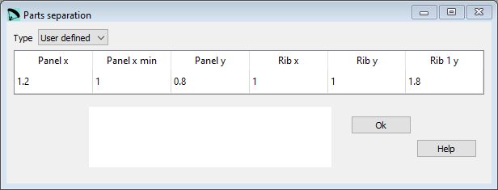
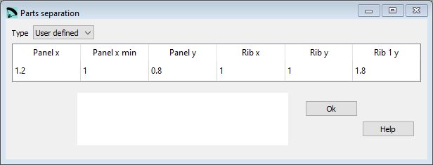

Parts separation¶
The program separates the different pieces (panels, ribs, …) drawn in 2D automatically, trying to not overlap with each other or put outside the drawing box. However, sometimes the separation between the pieces is not as we would like. Therefore, we have added some parameters to modify the automatic separation criteria. These are coefficients, around 1.0 that reduce or increase the separations in horizontal (x) or vertical (y) directions. If in doubt, do not need to change any of the parameters in this section, leave the default values to 1.0, or put a single parameter 0 at the beginning, which is equivalent to maintaining the default default values.
 

{kind=link}
Raw data:
***************************************************
* 32. PARAMETERS FOR PARTS SEPARATION
***************************************************
1
panel_x 1.2
panel_x_min 1.3
panel_y 1.4
rib_x 1.5
rib_y 1.6
rib_1y 1.0
parameter7 1.0
parameter8 1.0
parameter9 1.0
parameter10 1.0
Type¶
Parts separation is an optional section.
If you do not want to define/ use these parameters set the Type to None.
panel_x¶
Multiplication factor for x-direction panels separation.
panel_x_min¶
Multiplication factor for x-direction panels minimum separation.
panel_y¶
Multiplication factor for y-direction panels separation.
rib_x¶
Multiplication factor for x-direction ribs separation.
rib_y¶
Multiplication factor for y-direction ribs separation.
rib_1y¶
Multiplication factor to adjust the separation in y-direction for the horizontals straps type 1 or 11.
parameter7…10¶
These parameters are currently not used. If you edit directly the data file you need to define a valid value. If you use lepg, the SW will take care about in the background.
A more detailed description you can find here Laboratori d'envol website.